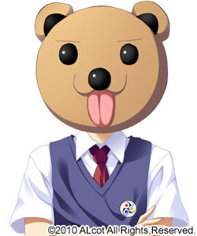
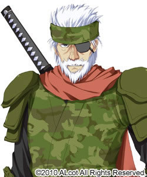
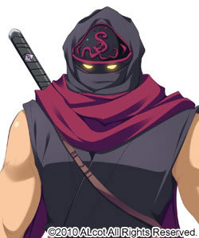
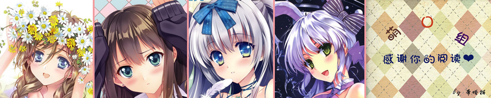

Before reading :If you are not Chinese
user,please read from [游戏资源分享/ Game resources sharing/ゲ?ム?源共有]. I think
here is what you need.
游戏介绍：
遥远过去的童话故事突然转变为现代的学园恋爱剧!?
前作『幼驯染是大总统』获得大好评的ALcot再次以日本童话为主题，发表了谐仿恋爱剧第2弹！
本作的主角竟然是桃太郎和金太郎，以及一寸法?和乙?的子孙们。
角色们的性格，容姿都与广为人知的童话角色相辅相成，一定会让玩家产生不可思议的亲切感?
本作更为重视故事性，描绘了和女孩子们有着很深关系的男主角在白天作为学生，晚上作为怪盗和她们共度日常生活的样子。
有些与众不同，打情骂俏的学园童话故事将何去何从!?
故事简介：
这个岛上曾经住着
“鬼”，收集了数不胜数的宝物。
但是，鬼被带着三位随从的“桃太郎”降服，最终桃太郎带宝归乡，过着幸福的生活。
童话落下了完美的帷幕。
这是，无人不知无人不晓的遥远“童话”??
时光流转，如今已是现代。
世间因为一个怪盗的活跃而话题沸腾。怪盗名为?温?（ウラ）。
神出鬼没，天不怕地不怕。行盗前会寄给对方预告信，用华丽的招数成功盗物。
据说，他就是在古代，被桃太郎降服的鬼的后代。
他的目的是将夺走的“秘宝”完璧归赵。
接着，鬼曾经栖息的小岛上，也收到了来自温?的预告信。
在小岛的中心建造的学园。不知是谁命名为『鬼ヶ?学?』。
有一位少年，进入了这个学园。
浦部圭介。他就是在世间成为话题的怪盗温?。
就在这时，小岛上收到来自温?的预告信这件事被传开了。
但是，温?本人并不记得自己有发出预告信这回事。
欺骗怪盗温?，发出预告信的假温?究竟是何方神圣。假温?盯上的“秘宝”又是何物呢。
圭介一边隐藏真实身份，白天作为学生晚上作为怪盗，一点点收集假温?以及秘宝的情报。
但是，在这过程中，他发现了一件事。
过去降服鬼的桃太郎和金太郎、一寸法师以及乙?的后代在这所学园就读。
跨越时代，跨越先祖们的命运，主角们的学生生活揭开了序幕。
这是，以某个学园为舞台的现代“童话”??
基本信息：
游戏原名：鬼ごっこ！ | 品牌：ALcot | |
发售日期：2011-03-31 | 原画： 仁村有志 ?海ゆう あおなまさお | |
声优： 北?六花 ?野そよぎ ?川ひなた 青?りんご 海原エレナ 佐藤しずく 越雪光 多富? … | ||
剧本： ?? 大三元 空下元 | TAG： ADV 学园 怪盗 恋爱 喜剧 | |
OP：
人物介绍：
| 【桃太郎】 吉?津? 灯 （きびつみや あかり） CV：?野そよぎ 降服鬼的桃太郎直系子孙，吉?津?家的下任当主。 成绩优秀＆运动神经拔群。性格开朗豪爽，美中不足之处是这位少女容易情绪化。 因为总是很激烈地跑动，裙子下面穿着安全裤。 经常做出比男人还要有男子汉气魄的言行，在男女中都非常有人气。 「能抓住你的只有我。我不会把你让给别人的！」 |
| 【金太郎】 坂上 加奈 （さかがみ かな） CV：?川ひなた 金太郎的直系子孙，坂上家现当主。 纯真无垢，性格稳重的大小姐。容易害羞，怕生。 |
| 【乙?】 西?寺 乙女 （さいおんじ おとめ） CV：北?六花 优雅稳重，有气质的大小姐。 胸部很大，身材超棒。 无论对谁都非常温柔，拥有的温暖似乎要将人融化一般。 由于过度被保护，没什么社会常识，经常犯傻的天然呆。 「好孩子好孩子。看，恢复精神了吗？」 |
| 浦部 葵 （うらべ あおい） CV：佐藤しずく 圭介的妹妹。 不怕生，开朗，善于交际的性格。 喜欢愉快的事情，经常拿人开玩笑，总是一边可爱地欺负别人一边独乐乐。 本性非常认真，独自担当浦部家的一切家务。 兄控，总是屁颠屁颠的跟在圭介的身边。 看到圭介和别的女孩子在一起就会不开心。 「如果你要向哥哥告白的话，先打倒我再说！」 |
| 犬? 真? （いぬかい まき） CV：海原エレナ 圭介在街上偶遇的身材完美的美人OL。 寡妇。 看上去好像严人严己，给人冷淡印象的女性工薪族。 实际上是个很优柔寡断，缺乏自信的爱哭虫。 「作为母亲，我很失败……是吧」 喜欢读书，最喜欢过去的果实和遗迹之类的。 非常热爱遗迹，可以说是遗迹狂热研究者。 拥有异常怪力，害怕伤害人和事物所以性格不太积极。 「我绝对不原谅破坏遗迹的怪盗先生」 |
| 【一寸法?】 住吉 暮? （すみよし くれは） CV：青?りんご 毫不隐瞒对主人公的敌对心理，毒舌小个子少女。 喜欢独处，总是单独行动。 比起感情更注重理论，比起义理更优先利益。 虽说不是无表情，但是不知道是不是因为她的性格和吊眼梢的眼睛所致，看上去总是一副在生气的表情。实际上非常贫困，为了维持生计拼命打工。 「坠入地狱三次之后，一边学狗叫一边腐烂吧」 |
 | 坂上 熊吉 （さかがみ くまきち） CV：古河?人 加奈的双胞胎哥哥。 平时总是用熊的公仔遮着脸部。 取下熊公仔的话是个帅哥（貌似）。 非常爱说谎?夸张?经常做出模凌两可的行动，和他在一起相当疲惫。 自称名为变态的绅士，总是做和犯罪擦边的事情（应该说是犯罪以上），经常被灯暴殴。 「真失礼啊。我明明就是名为变态的绅士的说」 |
| 西?寺 玉彦 （さいおんじ たまひこ） CV：一条和矢 乙女的哥哥。西?寺家下任当主。 口号是乙女命！乙女至上主义。有着为乙女而生为乙女而死的觉悟。 看上去很认真工作的样子，其实是个懒鬼。 以为他在整理书类，其实在把偷拍的乙女照片贴在笔记本上，以为他在操作电脑，结果是在更新博客之类的。 总体上来说，如果不纠缠乙女的话，他还算个不错的男人。 「你能守护好她么？让我看看你的觉悟吧」 |
 | 浦部 ?路 （うらべ あくじ） CV：多富? 圭介和葵的祖父。 第二代温?（ウラ）。 虽说已经隐退，但是他的实力连现在的圭介都无法超过。 性格豪爽的老头。 虽然和圭介们分开行动，但是偶尔会出现一下，给予帮助或者铁拳制裁然后消失。 他那隐藏气息的功力让人惊异。 「道具不分善恶。全由使用者的心而定」 |  | 忍者?? （にんじゃとうりょう） CV：越雪光 坂上家所属忍?的头领。 经常在坂上家当主加奈的身边保护她。 本名不明。 绝不宽恕任何靠近加奈的男人。 虽然身躯巨大，但也能悄声无息地出现在人的身后，用日本刀架在对方的脖子上。 「不许对加奈大人用这么轻薄的语气说话」 |
【无图片】 | 主人公 浦部 圭介 （うらべ けいすけ） 看上去是转入鬼ヶ?学?的二年级学生。 其实是第三代怪盗温?（ウラ）。 为了调查假温?以及探寻隐藏在岛上的鬼之秘宝，和妹妹葵一起来到了美夜?。 | ||
游戏资源分享/ Game resources sharing/ゲ?ム?源共有：

汉化组：年糕汉化组
汉化补丁相关帖：http://www.xoxd.org/forum.php?mod=forumdisplay&fid=141
在此感谢汉化组的辛勤劳动~
Warm tips for non-Chinese users：
① If you download The main
game(ゲ?ム本体) ,foreign users please run【.exe】
② Our website provide the
Game download ：the Online file Storage（オンラインストレ?ジ）of games
.
③ All resources are provided by clients whose
copyright is self-explanatory; no party is allowed to copy any resources
without the consent from the owner.
汉化硬盘版/The main game/ゲ?ム本体：【密码/password：四散的尘埃】
百度网盘/ the Online file Storage 1/オンラインストレ?ジ一：http://pan.baidu.com/s/1caCJue
FD游戏汉化版：
http://tieba.baidu.com/p/1951195056
游戏CG+OST
Game CG+OST
游戏本篇CG：magnet:?xt=urn:btih:7599231f1fd292daf1c585d67afd72c93bb65d81
游戏FD的CG：magnet:?xt=urn:btih:36d67fa50557217035997dbbb20c4104226c83a6
OST：http://pan.baidu.com/s/1czFnyQ
OST试听系统：
个人吐槽：
其实对于废萌，我内心是拒绝的……因为……实在太甜了【当然对我来说只要没有血没有NTR都很甜】……该部女主角们简直不能再符合众玩家的口味，又傲娇又会卖萌又容易脸红简直出水芙蓉未谙世事……马丹，从头甜到尾……甜的我想睡觉……但是妹妹和玲鹿的确很不错，这个妹妹有点萌哦~玲鹿sama快来踢我一脚吧~声线有激起抖M魂的神奇力量！
感觉这游戏的欧派都有毒……尤其是乙女的……存在感太强了……
熊吉声优居然是我A车长？艾玛这个可以的……面瘫男到死变态的完美转型【笑cry.jpg】这转变是要跟上润哥吗噗哈哈~
还有该部作品出现的所有男性……都是hentai……一群绅士……一群不知廉耻的绅士……啊~让我个刚玩完Euphoria的人写这种和谐美好的恋爱故事的短评简直是酷刑啊！写不出来了！
游戏画面鉴赏：
游戏攻略/ゲ?ム攻略/ Walkthrough：
中文版/ Chinese version：
标记★注：H场景中的CG差别会由系统自动进行回收。
标记◆号的选项为二周目之后才会出现的选项，初次游戏时，无视即可。
暮叶
◆
从追兵手里逃走
【SAVE１】
把水果牛奶拿给她
★
抱着暮叶
★
最后想射在里面
★
在腔里不停搅动，然后射进里面
暮叶
ＥＮＤ
——————————————————————————–
加奈
【SAVE１】开始
不能对店里的商品出手的
【SAVE２】
绅士般的递上毛衣
★
我就是爱着你那幼小的体型啊
★
受不了了 ! 把一切都交给加奈了 !
加奈
ＥＮＤ
——————————————————————————–
灯
【SAVE２】开始
我也是男人啊。赶紧脱衣服上吧
★
就这样两个人一起变成猴子吧
★
现在开始认真做
灯
ＥＮＤ
——————————————————————————–
乙女
以上全ＥＮＤ后，选择乙女编开始
★
想玩新婚捉迷藏
★
从下面揉奶部
乙女
ＥＮＤ
日文版/ Japanese version：
注：H场景中的CG差别会由系统自动进行回收。
标记◆号的选项为二周目之后才会出现的选项，初次游戏时，无视即可。
暮?
◆追っ手から逃げている
【SAVE１】
フル?ツ牛乳を奢る
暮?を抱きしめる
最後は膣に注ぎ?みたい
奥をぐりぐりして、中で果てたい
暮?
ＥＮＤ
——————————————————————————–
加奈
SAVE１开始
店の商品には手を出さない
【SAVE２】
?士的にタオルを探しに行く
ぼくは、きみの幼いＷＡＲＥＭＥを?した
もう加奈に身を任せる
加奈
ＥＮＤ
——————————————————————————–
灯
SAVE２开始
俺も男だ。服を脱いで迫る
このまま二人でお猿さんだ
今から本?出す
灯
ＥＮＤ
——————————————————————————–
乙女
以上全ＥＮＤ后，选择乙女?开始
新婚さんごっこをしたい
おっぱいを下から揉む
乙女
ＥＮＤ
